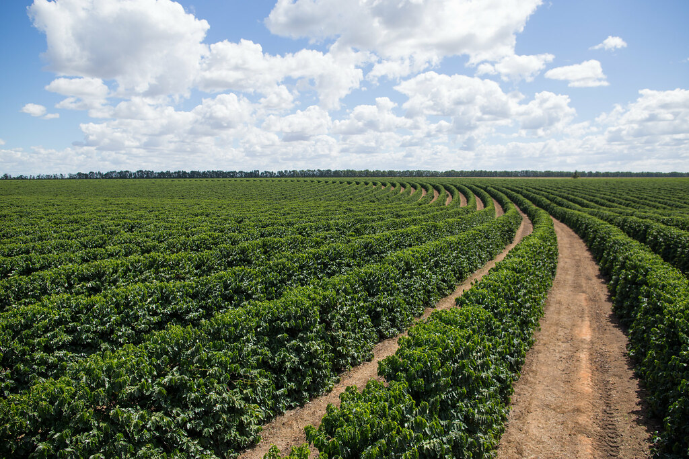
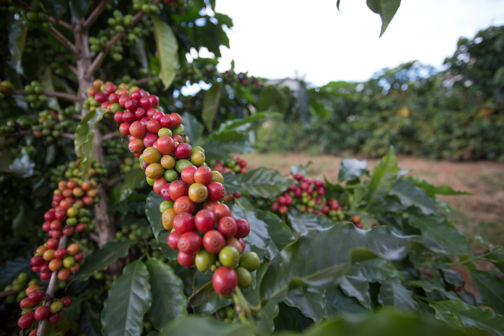
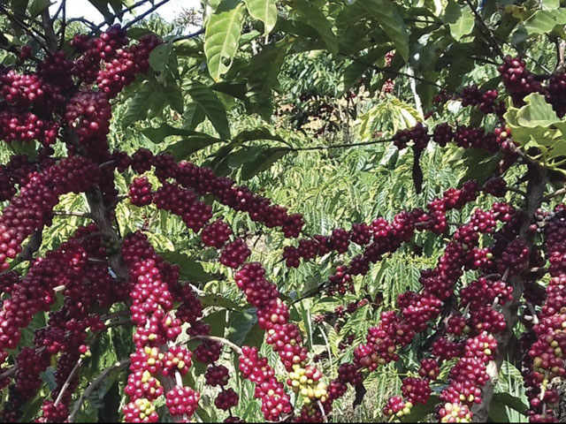

Arábica ou Canephora: o que muda na sua xícara?
Conheça as espécies, variedades e curiosidades por trás de uma das bebidas mais apreciadas do mundo.

Duas espécies em foco
Embora existam diversas espécies de cafeeiros, duas possuem grande importância comercial: Coffea arabica e Coffea canephora.
Cada espécie apresenta características próprias de cultivo, composição química e potencial sensorial.
Café Arábica

O café Arábica é conhecido pela grande diversidade de aromas e sabores. Dependendo da variedade, do ambiente e do processamento, pode apresentar notas florais, frutadas e achocolatadas.
É bastante cultivado em regiões de maior altitude, onde condições climáticas favoráveis podem contribuir para a qualidade dos grãos.
Café Canephora

A espécie Coffea canephora inclui os grupos Robusta e Conilon. Seus cafés frequentemente apresentam corpo intenso e maior teor de cafeína.
No Brasil, o Conilon tem grande importância econômica, especialmente no Espírito Santo e Rondônia.
Variedades de café Arábica
Dentro de uma mesma espécie existem diferentes variedades, selecionadas por características agronômicas e potencial de qualidade. Alguns exemplos.
Bourbon
Variedade tradicional, conhecida pelo potencial de elevada qualidade sensorial. Possui linhagens de frutos vermelhos e amarelos.
Catuaí
Desenvolvida no Brasil a partir do cruzamento entre Mundo Novo e Caturra. É conhecida pelo porte baixo e pela ampla utilização na cafeicultura.
Mundo Novo
Originada de cruzamento natural entre materiais Bourbon e Typica. Apresenta plantas de porte alto e boa produtividade.
Variedades de café Conilon/Robusta
Alguns exemplos de variedades e clones de Conilon e Robusta
Vitória - Incaper 8142
Variedade clonal mais famosa do estado, formada por um agrupamento de 13 clones superiores compatíveis entre si.
Conquista - ES8152
Variedade muito apreciada que combina excelente produtividade com tolerância à seca e qualidade de grão superior.
A1, AS2, AS3, LB1 e Pirata
Clones muito cultivados em lavouras tecnificadas do Espírito Santo pela excelente arquitetura de planta e alta peneira (grãos maiores).
A variedade define o sabor?
Não completamente! O resultado na xícara também depende do clima, solo, maturação, processamento, torra e método de preparo.
Por isso, cafés da mesma variedade podem apresentar perfis sensoriais bastante diferentes.